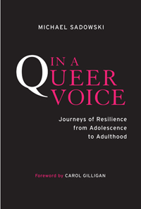

<body bgcolor="#FFFFFF" text="#000000" link="#0000FF" vlink="#CC0000" alink="#CC0000"><center><hr width="350" size="1" align="center" noshade>In-depth interviews show us how LGBTQ youth survive adolescence, thrive as adults, and find a voice that is uniquely their own<hr width="350" size="1" align="center" noshade><p><a href="https://cdcshoppingcart.uchicago.edu/Cart/ChicagoBook.aspx?ISBN=9781439908013&&PRESS=temple" target="_top">Buy this book!</a> | <a href="https://cdcshoppingcart.uchicago.edu/Cart/Cart.aspx?PRESS=temple" target="_top">View Cart</a> | <a href="https://cdcshoppingcart.uchicago.edu/Cart/Cart.aspx?PRESS=temple" target="_top">Check Out</a></p><p></p></center><!--none//--><h1>In a Queer Voice</h1>
<H2>Journeys of Resilience from Adolescence to Adulthood</H2>
<H2>Foreword by Carol Gilligan</H2>
<h3>Michael Sadowski</h3>
<P>cloth 1-4399-0801-X $80.50, Jan 13, <FONT COLOR=#990033>Available</FONT>
<br>paper 1-4399-0802-8 $26.95, Jan 13, <FONT COLOR=#990033>Available</FONT>
<br>Electronic Book 1-4399-0803-6 $26.95 <FONT COLOR=#990033>Available</FONT>
<BR> 210 pp
6x9
1&nbsp;table
</P><BLOCKQUOTE><I>"An important contribution to the argument for a more nurturing environment for young GLBT people."</i><br>&#151<b><i> Publishers Weekly</i></b></I></BLOCKQUOTE>
<P>Adolescence is a difficult time, but it can be particularly stressful for lesbian, gay, bisexual, transgender, and queer-identifying youth. In order to avoid harassment and rejection, many LGBTQ teens hide their identities from their families, peers, and even themselves.
<P>Educator Michael Sadowski deftly brings the voices of LGBTQ youth out into the open in his poignant and important book, <i>In a Queer Voice</i>. Drawing on two waves of interviews conducted six years apart, Sadowski chronicles how queer youth, who were often "silenced" in school and elsewhere, now can approach adulthood with a strong, queer voice.
<P><i>In a Queer Voice</i> continues the critical conversation about LGBTQ youth issues&#8212;from bullying and suicide to other risks involving drug and alcohol abuse&#8212;by focusing on the factors that help young people develop positive, self-affirming identities. Using the participants' heartfelt, impassioned voices, we hear what schools, families, and communities can do to help LGBTQ youth become resilient, confident adults.
<BR>&nbsp;<h2>Excerpt</h2><P>Excerpt available at <a href="http://www.temple.edu/tempress">www.temple.edu/tempress</a></p>
<BR>&nbsp;<h2>Reviews</h2>
<p><I>"Liberation begins when you find your voice and begin to use it. </I>In a Queer Voice<I> is a groundbreaking longitudinal study that follows a cohort of LGBTQ youth over nearly a decade of their lives. Michael Sadowski gives us invaluable insight into how queer youth find their voices and use them to liberate themselves, and lays out a road map for how we can better insure these youth grow into happy, healthy adults."</I> <br>&#151<b>Kevin Jennings</b>, Founder, GLSEN (Gay, Lesbian and Straight Education Network)
<p><I>"With graceful writing and delicate ethics, </I>In a Queer Voice<I> chronicles the lives-in-motion of queer young adults over time. Refusing to equate oppression and damage, Sadowski’s book offers a counter-story to the traditional tragedy or the less traditional but equally partial ‘joys of coming out’ story. The narratives reveal a doubled story: we hear, in intimate detail, the scars produced by silence and harassment, and we bear witness to the compelling ways in which deep relationships and supportive communities can embolden queer voices to interrupt the silence, contest the harassment, resist the oppression, and build movements for sexual justice. This volume expands our understandings of resilience, oppression, and resistance; it encourages educators, families, counselors, and peers to refuse silencing, and honors the human desire for recognition and justice. The young people interviewed, drawn from urban and rural communities, challenge gender and sexuality binaries as they provoke in readers a radical imagination for a politics of sexual justice."</I> <br>&#151<b>Michelle Fine</b>, Distinguished Professor of Psychology at the Graduate Center, City University of New York
<p><i>"In this thoughtful study, Sadowski profiles six young people whom he interviewed in their adolescence and then revisited several years later to see how they transitioned from their early isolated... insular silence regarding their gender or sexuality to their 'queer voices' of strength, optimism, and defiance.... An intellectual complement to the 'It Gets Better' project, this works as both a moving human document and a springboard for discussion and research in human sexuality, psychology, sociology, and linguistics."</i><br>&#151<b><i>Library Journal</i></b>
<p><i>"The book gives textbook examples for teens that it really does 'get better."</i><br> &#151<b>Instinct</b>
<p><i>"[A] valuable call to action....</i>In a Queer Voice<i> effectively elevates the professional discourse on LGBTQ youth."</i><br>&#151<b>Chronogram</b>
<p><i>"While reading a personal account from an LGBT teen can be enlightening, Sadowski provides added insight by allowing the teens to speak for themselves and analyzing their linguistics to uncover deeper meaning. </i>In a Queer Voice<i> is an excellent piece for teachers, mental-health providers or other professionals looking to learn more about the psyche of LGBT youth. It can also be a wonderful resource for teens themselves, or their families, who arein need of help."</i><br> &#151<b><i>Philadelphia Gay News</i></b>
<p><I>"Truly well written, interesting, and above all, important.... </I>In a Queer Voice<I> is easy to read and interesting. It is well suited for the classroom and would be valuable in any Gender Studies, Men and Masculinities Studies or Women's Studies class.... The book follows recent research on the topic very well and extends on previous knowledge with its well thought out and informative interviews."</I> <br>&#151<b><i>Metapsychology Online</b></i>
<p><I>"[An] ambitious and illuminating new book.... The stories in this book are compelling and very much worth the attention of anyone, including educators, parents, mental health professionals, and policy makers, with an interest in the well-being of youth, and LGBTQ youth in particular. In its emphasis on listening to these young people, and connecting to their autobiographies, the book also embodies what might be the most helpful prescription for therapists or other professionals working with this population, creating a space where they can share their life stories in all of their vulnerability, passion, and resilience."</I> <br>&#151<b><i>Journal of Gay & Lesbian Mental Health</b></i>
<BR>&nbsp;<h2>Contents</h2><P>
<p>Foreword by Carol Gilligan
<br>Introduction: <i>The Importance of Being Heard</i>
<br>1. <b>David</b>: The Slow Build of a Voice of Resistance
<br>2. <b>Lindsey</b>: Learning a New Language
<br>3. <b>Ruth</b>: A Person to Trust and a Place to Belong
<br>4. <b>Travis</b>: Twenty-First-Century Everyman
<br>5. <b>Jordan</b>: Across the Gender Border—and Back Again
<br>6. <b>Eddie</b>: Coming Out and Embracing the World
<br>7. The Quest for “One Good Relationship”: <i>Connections and Disconnections in Adolescence</i>
<br>8. Foundations of Queer Voice: <i>Silence and Support in Schools, Communities, Families, and Society</i>
<br>Afterword
<br>Acknowledgments
<br>Note on the Listening Guide Method
<br>References
<br>Online Resources for Supporting Queer Youth Voice
<br>Index
</P><BR>&nbsp;<H2>About the Author(s)</H2>
<P><b>Michael Sadowski</b> is an Assistant Professor in the Bard College Master of Arts in Teaching Program, based in New York City and Annandale-on-Hudson, New York. He is also the editor of <i>Adolescents at School: Perspectives on Youth, Identity, and Education</i>. A former high school teacher, he was an instructor at the Harvard Graduate School of Education, editor of the <i>Harvard Education Letter</i>, and vice-chair of the Massachusetts Governor's Commission on Gay and Lesbian Youth.</P>
<BR><H2>Subject Categories</H2>
<p><A HREF="/tempress/sexual.html" TARGET="_top">Sexuality Studies/Sexual Identity</a>
<BR><A HREF="/tempress/education.html" TARGET="_top">Education</a>
<BR><A HREF="/tempress/sociology.html" TARGET="_top">Sociology</a>
</p>
<p align="center"><a href="https://cdcshoppingcart.uchicago.edu/Cart/ChicagoBook.aspx?ISBN=9781439908013&&PRESS=temple" target="_top">Buy this book!</a> | <a href="https://cdcshoppingcart.uchicago.edu/Cart/Cart.aspx?PRESS=temple" target="_top">View Cart</a> | <a href="https://cdcshoppingcart.uchicago.edu/Cart/Cart.aspx?PRESS=temple" target="_top">Check Out</a></p><p><font face="Arial" size="1"><a href="copyright.html" onMouseOver="window.status='Web Copyright Policy';return true;" onMouseOut="window.status=''" title="Web Copyright Policy">&copy;</a> 2015 <a href="http://www.temple.edu" target="new" onMouseOver="window.status='Link to Temple University home page';return true;" onMouseOut="window.status=''" title="Link to Temple University home page">Temple University</a>. All Rights Reserved. http://www.temple.edu/tempress/titles/2182_reg.html</font></p>